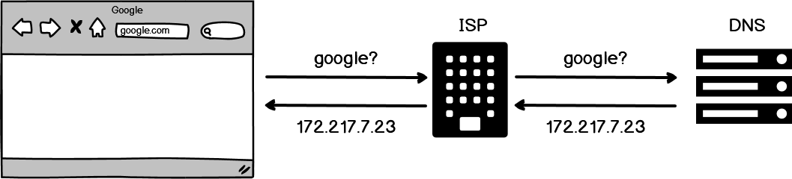
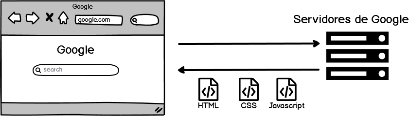

Seccion I
Como funciona Internet
Que es Internet
Internet es una red de computadoras conectadas entre si, transfiriendo informacion. Los servidores son computadoras que estan prendidas todo el tiempo, esperando solicitudes de informacion desde computadoras normales ("Clientes")

Como carga una pagina web:
Para llegar a una pagina se necesita saber la direccion IP de esa pagina. El Navegador solicita esa informacion al ISP (Internet Service Provider: El que te da internet) el cual hace la consulta a los servidores DNS(Domain Name Service: Guardan el registro de que nombre pertenece a que IP)
Luego el Navegador sabe a que IP solicitar la pagina

Por ejemplo, poniendo esa misma IP (172.217.7.23) en la URL lleva directo a Google
Internet Backbone
Todas las computadoras estan conectadas entre si a traves de todo el mundo. Para llegar de un lado al otro se utilizan cables submarinos
A veces, daños en estos cables pueden producir cortes. En 2019, por daños a un cable submarino estuve 1 mes con lag en overwatch
Navegadores Web
Un navegador es un sofware que permite buscar la direccion ip de un sitio, y recivir informacion para mostrar ese sitio
Traceroute
Herramienta que muestra los "Saltos" que ocurren hasta llegar al destinatario
Que afecta la velocidad de una pagina
Cuanto mas cerca (fisicamente) se encuentra el servidor, mas rapido carga la pagina
Cantindad de saltos
Peso de los archivos a transferir
Front-End, Back-End, Full-Stack
Front-End
Se encargan de la parte visual de la pagina
Tecnologias incluyen: HTML, CSS, Javascript, React
Back-End
Trabaja con el servidor, manejando los datos de la pagina
Tecnologias incluyen: Node.js, Express.js, base de datos
Full-Stack
Trabajan con estas 2 partes
Historia de Internet
Vox - Internet MapsHTML, CSS, JS
Tienen diferentes funciones. Trabajan juntos para formar un sitio web
HTML
Se encarga de la estructura basica de la pagina. Imagenes, texto, contenido
CSS
Se encargan de darle estilo. Colores, fuentes, tamaño, etc
Javascript
Codigo que le da funcionalidad a los sitios web
Al Principio solo habia html. Era feo
Entonces llego CSS. Le dio un poquito mas de estilo
Luego llego Javascript. Agregando funcionalidad a las paginas
Primera pagina web